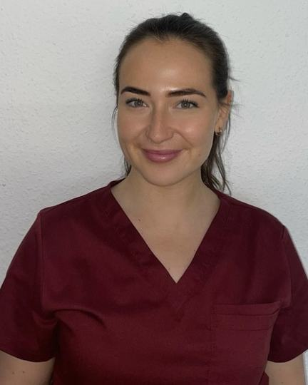
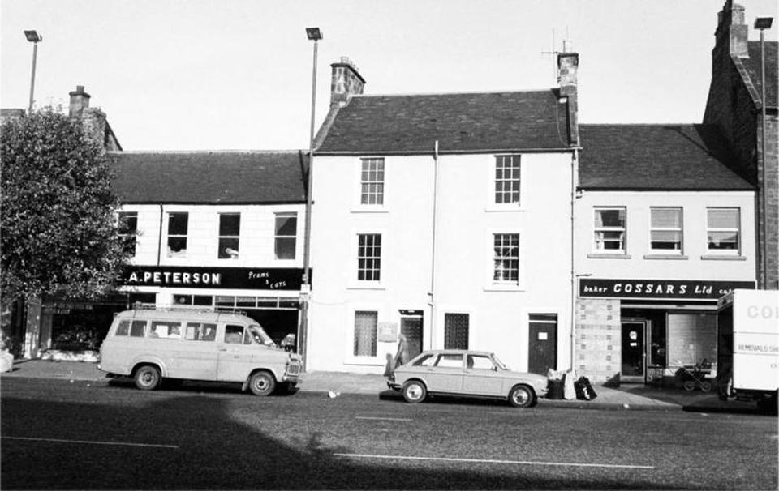
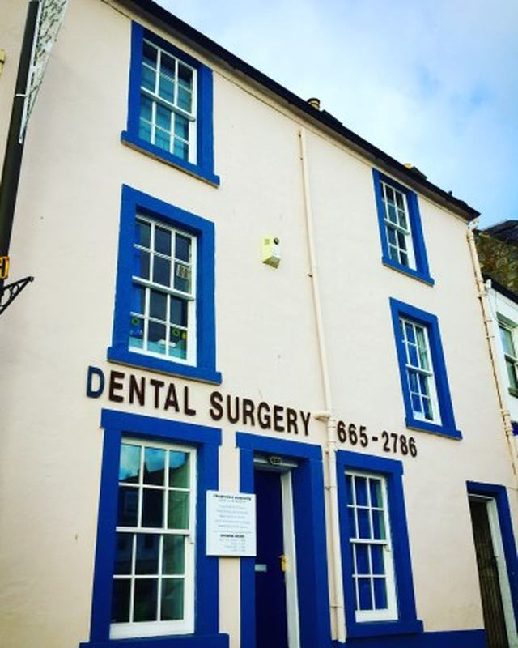
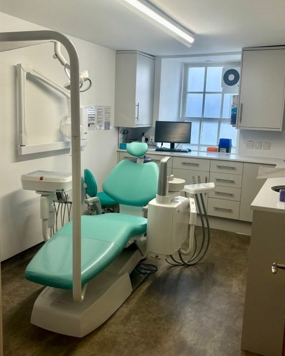

Our team
Six dentists, a head nurse, a practice manager, and a team of nurses and receptionists. Dr Martin Chan and Dr Caroline McArdle run the practice as partners.

A dental practice on Musselburgh High Street since the early 1970s. Read our history
Our dentists
Every dentist in the UK must be on the General Dental Council (GDC) register. We show each dentist’s GDC number where we have it.
-

Dr Martin Chan
Partner
GDC number 103100
Martin qualified at the University of Dundee in 2006. He finished his training at Family Dental Care in Prestonpans in 2007, and has worked at this practice since then.
He fits crowns and other false teeth on to dental implants. He speaks Cantonese. He also does home visits every second Wednesday morning: phone us to find out when.
-

Dr Caroline McArdle
Partner
GDC number 103098
Caroline qualified at the University of Dundee in 2006. She enjoys cosmetic and restorative work, and treating worn teeth. She has taken courses in veneers and onlays, denture design, gum disease and how teeth bite together.
She also offers facial aesthetics. Read about facial aesthetics
-

Fraser Sim
Associate dentist
GDC number 52979
Mr Sim qualified at the University of Edinburgh in 1979 and worked for a year in Dunbar. He joined this practice in 1980, became a partner in 1985 and owned it from 1994.
-

Dr Ryan Wallace
Associate dentist
GDC number 283761
Ryan qualified at Queen’s University Belfast in 2019. He worked in Ballymena and Eyemouth before coming to Musselburgh.
He has a special interest in composite bonding and veneers, and is training further in oral surgery.
-

Anna Maguire
Associate dentist
Anna qualified at the University of Dundee in 2022. She enjoys all parts of general dentistry, especially restoring teeth.
In her free time she enjoys running, travelling and spending time with her dogs.
-

Lynsey Ogilvie
Associate dentist
Lynsey qualified at the University of Dundee and worked at a practice in Edinburgh before joining us. She enjoys every part of dentistry, especially restoring teeth.
In her free time she enjoys new places to eat, spin classes and travelling.
Practice manager and head nurse
Jackie and Avril have both worked here since 1989.
-

Jackie Hadden-Bowler
Practice manager
Jackie joined the practice in September 1989. She runs reception, looks after all our staff, and deals with patients’ questions and accounts.
If you have a problem with your treatment or your bill, or want to make a complaint, speak to Jackie first.
-

Avril Bathgate
Clinical head nurse
GDC number 118999
Avril joined as a trainee dental nurse in the summer of 1989, started full time in January 1990, and became head nurse soon after. She gained her dental nursing certificate in 1992 and her sedation certificate in 1995.
She trains new staff and looks after nursing, stock and practice policies.
Nurses, reception and decontamination team
The people who welcome you, look after you in the chair, and clean and sterilise our instruments.
- Stephanie Gordon
- Shirley
- Christina Cochrane
- Esther Walters
- Emma Ilyas
- Monika Szymanska
- Karen McNamera
- Mikela Nisbet
- Corey Paton
- Kenny Dowie
- Justyna Krywko
- Debbie Yim
- Kerry Harrison
- Sian McNeil
- Kamila Saruga
- Megan Sneddon
- Yvonne Kowalska
Our history
A dental practice in Musselburgh since the 1960s, and on the High Street since the early 1970s.
- 1960s
Mr Robertson starts the practice in the parsonage nearby. He keeps goats and chickens in his front garden, and gives goat’s milk to patients who can’t have cow’s milk.
- Early 1970s
Mr John Carr moves the practice to where it is now, on the High Street.
- Late 1970s
Mr Carr retires, and Mr Ian Chamberlain takes over the practice.
- 1980
Fraser Sim joins as an associate dentist. He later becomes a partner, and then the owner.
- 1989
Jackie Hadden-Bowler and Avril Bathgate join the team. Both still work here today.
- 2017
In November, Dr Martin Chan becomes a partner with Mr Sim.
- 2024
In March, we open a new treatment room after two years of building work.
- Today
Dr Martin Chan and Dr Caroline McArdle run the practice as partners, offering NHS and private treatment.


